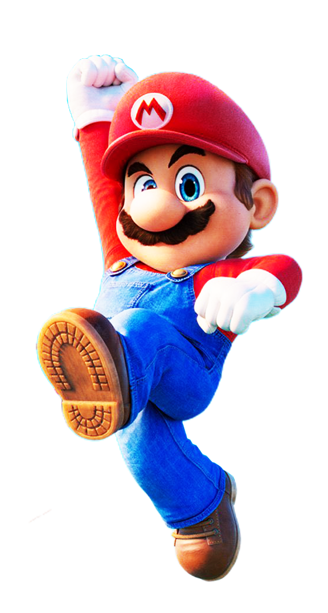

"O tradicional personagem Mario foi concebido em 1980, quando depois do fracasso da Nintendo em tentar idealizar um jogo baseado no desenho Popeye, o japonês Shigeru Miyamoto foi solicitado para projetar um novo game baseado em suas próprias ideias. O resultado desse desafio foi a criação de um jogo no qual o personagem Jumpman (uma versão antiga de Mario) tentava salvar sua namorada Pauline do terrível gorila Donkey Kong.".
"Em 1980, após uma tentativa sem sucesso da Nintendo ao fazer um jogo baseado no desenho Popeye, Miyamoto, considerado o pai do Mario, foi então solicitado pela empresa para projetar um novo jogo baseado em suas próprias ideias. O resultado disso foi Donkey Kong, em que o personagem "Jumpman" (Mario) tentava salvar a sua namorada Pauline do gorila Donkey Kong..".
Esta é a primeira página do site. Se você quiser, pode acessar também a minha segunda página
Você também pode acessar a nossa página de notícias
Infelizmente seu navegador não conseguiu carregar o vídeo.

Você pode acessar o site clicando aqui
Esta é a primeira página do site. Se você quiser, pode acessar também a minha segunda página
Você também pode acessar a nossa página de notícias